RxSupply AI.
AI proposes. Python checks. A person decides.
By Rohith Singhu · Updated
What is RxSupply AI?
RxSupply AI is a project by Rohith Singhu, built with Python, SQLite FTS5, BM25, Ollama and JSON API. An evidence-grounded medicine supply prototype for operations teams. Validates model-selected facts against FDA records and prepares simulated replenishment plans for human review. Key result: 10/10 regression cases passed on the retrieval and validation path.
What problem does RxSupply AI solve?
Medicine supply review involves different evidence: national notices, local stock and a purchasing budget. A generated answer can blur those boundaries or invent facts that the source never contained.
How does RxSupply AI work?
I retrieve product records with SQLite FTS5 and BM25, ask an optional local model to select facts, and independently compare every proposed field/value against retrieved evidence. Missing or invalid evidence leads to abstention. A separate planning tool works with synthetic inventory under budget and supplier constraints.
The workflow.

View Mermaid diagram source
flowchart LR
A[Public FDA snapshot] --> B[SQLite BM25 retrieval]
B --> C[Local LLM fact selection]
C --> D[Python claim validator]
D --> E[Evidence packet or abstention]
F[Simulated inventory] --> G[Budget planning]
E --> H[Human review]
G --> HThe diagram above is a simplified visual summary. This Mermaid source captures the branching workflow.
A closer look.

Results, with context.
10/10 regression cases passed on the retrieval and validation path
1,600 normalized records in the dated source snapshot
Regression cases I wrote; procurement scenarios are simulated.
Runs as a CLI and a local JSON API. Next step: a broader evaluation that covers the optional LLM path.
These results come from the project README and linked artifacts.
What I learned.
Separating model proposals from deterministic validation makes failures inspectable. Exact source agreement is useful, but it cannot establish clinical suitability or local availability. The evaluation explicitly separates the extractive baseline from the optional LLM path.